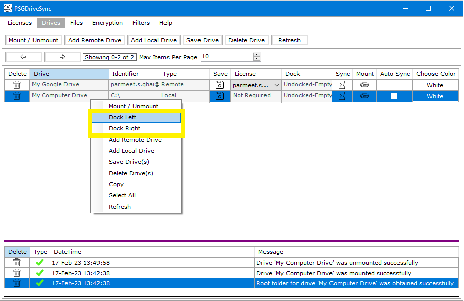
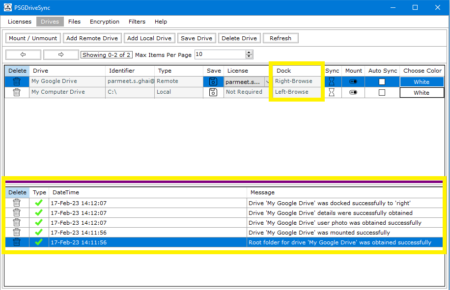
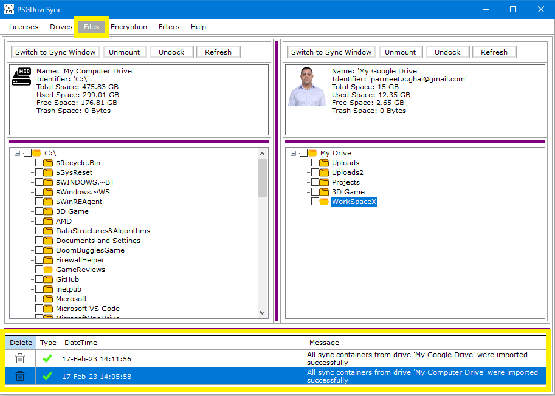

Docking is an optional step and its only required in order to view the content (files/folders) and properties of a drive in the "Files" window. This allows you
to either perform real time file operations like cut, copy and paste or start / stop sync operations on the drive. With AutoSync enabled, a drive is mounted
automatically and syncing starts on the drive right after however the drive is not docked automatically. Docking and Undocking can only be done by the user manually.
Undocking is the exact opposite of docking where the drive's contents (files and folders) and properties are removed from the "Files" window where they are no longer
visible to the user however the sync operations, if started, will remain started unless you dock the drive again and stop the sync operations from the "Files" window.
|
1 |
In order to Dock a drive you just need to select the drive first and do a right click on the drive. In the right click menu either select "Dock Left" to dock the drive to the left of the "Files" window or select "Dock Right" to dock the drive to the right of the "Files" window. |
 |
|
2 |
If the drive has successfully docked successfully then its dock status will indicate one of the dock statuses
|
 |
|
3 |
Go to the "Files" window and you should see the content (files/folders) and properties of the drive which have been mounted and docked. |
 |